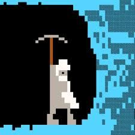

Главная | Страница 1 | Страница 2 | Страница 3 | Страница 4
|  |
Dwarf fortress - генератор событийDwarf Fortress - компьютерная игра, сочетающая в себе элементы симулятора строительства и управления и roguelike, разрабатываемая братьями Тарном и Заком Адамсами с 2002 года. Игра включает в себя три игровых режима - все они разворачиваются в процедурно сгенерированном мире. Генерируется не только ландшафт и различные локации мира, но исторические события и личности, а также государства. |
|
|
В основном режиме игрок непрямым образом управляет группой дварфов, пытаясь построить подземную крепость в процедурно сгенерированном мире; в течение игровой сессии игрок должен планировать строительство новых сооружений, организовывать быт жителей крепости, организовывать её защиту от врагов и заниматься тому подобными делами. В Dwarf Fortress нет какой-либо конечной цели, победа в игре не предусмотрена. Девиз игры — «Losing is fun» (с англ. — «Проигрывать весело»). Дополнительный режим Adventure больше напоминает традиционные roguelike. Несмотря на намеренно упрощённую графику и управление с клавиатуры, Dwarf Fortress примечательна необыкновенно сложной проработкой вымышленного мира и симуляцией множества его составляющих.